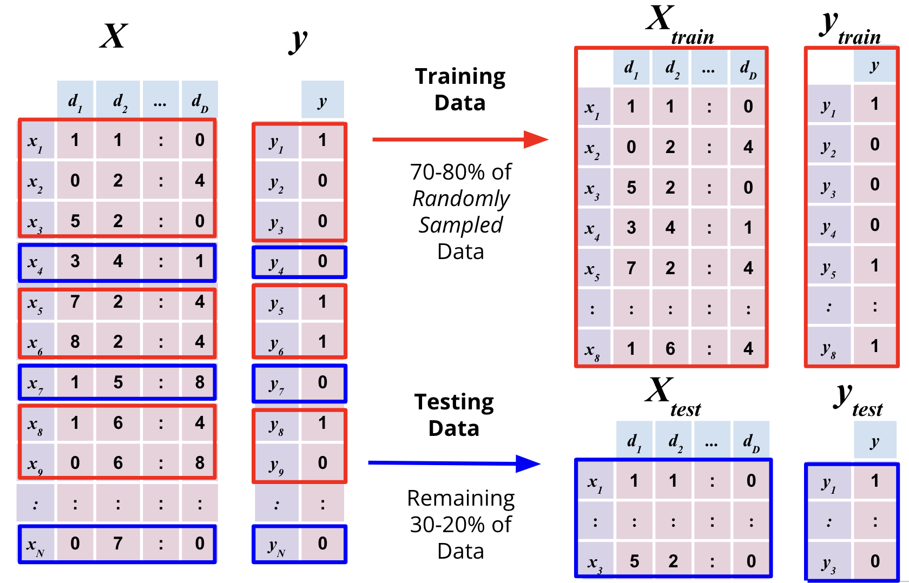
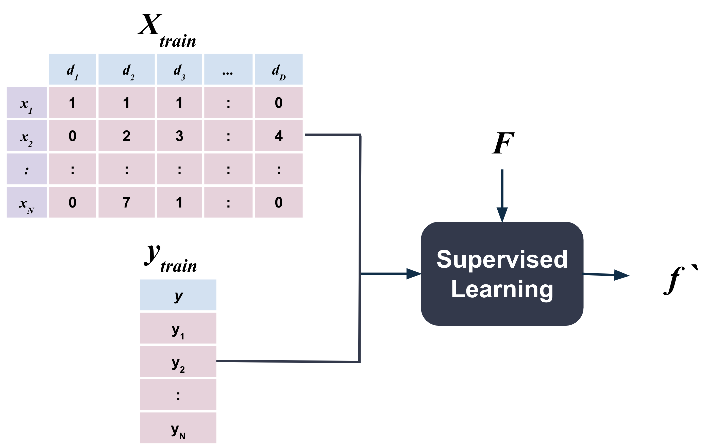
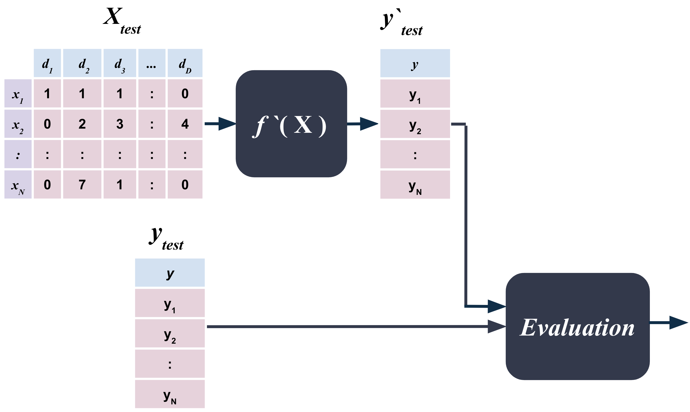

7. Supervised Learning#
Supervised learning is similar to how we learn in school.
First, there is a learning or training phase where we learn from lots of examples. Examples are essentially a set of questions and their answers.
The training phase is then followed by a testing phase where we apply our learning to a relatively small set of previously unseen questions.
Finally, there is an evaluation on how well we applied our knowledge to the test questions by comparing our answers to the correct answers.
Most machine learning problems involve predicting a single random variable \(\mathcal{y}\) from one or more random variables \(\mathcal{X}\).
The underlying assumption, when we set out to accomplish this, is that the value of \(\mathcal{y}\) is dependent on the value of \(\mathcal{X}\) and the relationship between the two is governed by some unknown function \(f\) i.e.
\(\mathcal{X}\) is here simply some data that we have as a pandas Dataframe pd.DataFrame whereas \(\mathcal{y}\) here is the target variable, one value for each observation, that we want to predict, as a pandas Series pd.Series.
{kind=link}
The figure above just depicts the core assumption underlying most machine learning problems.
Assumptions, loosely speaking, are what we formally call models.
Therefore, the basic mathematical model underlying most machine learning problems is that the target variable \(\mathcal{y}\) is a function of the input variables \(\mathcal{X}\) i.e. \(\mathcal{y = f(X)}\).
If this assumption does NOT hold, then there is nothing to learn and we cannot predict \(\mathcal{y}\) from \(\mathcal{X}\). In other words, \(\mathcal{y}\) is independent of \(\mathcal{X}\). For example, if we try to predict the outcome of a coin toss using the time of day, we will fail miserably because the two are independent of each other.
The core problem, distinct from any models or assumptions, here is that the function \(\mathcal{f}\) is unknown to us and we need to ”learn” it from the data.
Such problems fall under the broad category of Supervised Learning.
There are two primary types of supervised learning problems:
Classification - when the target variable \(\mathcal{y}\) is categorical
Regression - when the target variable \(\mathcal{y}\) is continuous
7.1. Train-Test Split#
The first step in supervised learning is to split the data into two sets: a training set and a test set.
The training set is used to train or learn the parameters of the model. The test set is used to evaluate the performance of the learning.
The convention is to use majority of the data for training and the rest for testing. The ratio of training to test data is typically 80:20 or 70:30.

It is extremely important to ensure the following:
The training set and test set are mutually exclusive i.e. no observation in the training set should be in the test set and vice versa.
The train and test sets are representative of the overall data. For example, if the data is sorted by date, then the train set should have observations from all dates and not just the most recent dates.
To ensure this, the train set must be randomly drawn from the data.
This can be implemented by randomly shuffling the data before splitting it into train and test sets or using the built-in .sample method.
7.2. Training Phase#
In supervised learning problems, we have a set of observations, each observation consisting of a set of input variables \(\mathcal{X}\) and a target variable \(\mathcal{y}\), and we want to learn a function \(\mathcal{f}\) that maps the input \(\mathcal{X}\) to the output \(\mathcal{y}\).
{kind=link}
In the figure above, \(F\) is the family of functions that we are considering. These are the second level of assumptions that we make and are what are commonly referred to as models.
The function \(f\) is the output function that we want have learned from the data.
For example, a common family of functions \(F\) is linear i.e.
If we are trying to predict the temperature in Fahrenheit given the temperature in Celsius, then
where x is the input temperature in Celsius and f(x) is the output temperature in Fahrenheit.
The above is just an example and there exist many other families of functions that we can consider. These will be covered in Chapters 10-13.
7.3. Testing Phase#
Once we have learned the function \(f\) from the training data, we can apply it to the test data to predict the target variable \(\mathcal{y}\).
7.4. Evaluation#
If supervised learning is like school, then the evaluation phase is like the grading phase and criteria.
The evaluation phase is where we evaluate how well we have learned the function \(f\) from the training data and how well we can predict the target variable \(\mathcal{y}\) from the test data.
The exact criteria for evaluation depends on the type of supervised learning problem. That is, evaluation metrics used for classification problems are different from those used for regression problems. These metrics are discussed in detail in the following chapters.
7.5. Cross Validation#
Just as most courses in school don’t have just the final test, most machine learning problems don’t have just one test set either. Often times, it is better to create multiple test sets, evaluate the performance of the model on each of them and then report the average performance of the model. This practice is called cross validation in machine learning.
There exist many different ways to create multiple test sets. The most common way is to randomly split the data into multiple randomly sampled train and test sets. This is called random cross validation.